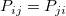
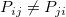

クロス集計のカイ二乗結果を解釈するには
crosstab-Results
分割表
分割表は、度数、パーセント、残差など変数の度数分布についての情報を提供します
グループ間のレベルを比較するのに、度数、Row%、Col%、Total%を使用します。
残差は列と行変数の独立性を検定する統計量です。通常、値が0に近いほど列と行変数は関連性がありません。
調整済み残差は、N(0,1)で標準化されており、セル間の比較のために役立つ残差です。1.96より大きいまたは、-1.96より小さい値の場合、観測された度数は予測より有意に大きいあるいは小さいことを示します。より大きな値は、列変数と行変数のより大きい関連性を示します。
カイ二乗検定
カイ二乗検定は、行と列の変数が独立であるという仮定を検定するための結果を提供します。
カイ二乗検定表は、カイ二乗、DF、Prob > ChiSq(p値)を表示します。
Prob > ChiSq が有意水準より小さい場合、この水準において行と列変数間の関連性の有意な根拠があると言えます。そうでない場合、行と列の変数間の関連には有意な根拠がないといえます。
ここでは、4つの検定が利用できます。
- ピアソンのカイ二乗
- 最も一般的に利用されるカイ二乗検定です。検定統計量は、観測度数と予測度数を予測度数で割った平均平方偏差の合計で計算されます。標本が大きいときにほぼカイ二乗分布になります。そのため検定結果はカイ二乗分布の参照により作成されます。
- 尤度比
- 尤度比は独立性の帰無仮説のおけるデータの尤度をもとにしています。帰無モデルの対立モデルに対するフィットの良さを比較するのに使用されます。この検定統計量もほぼカイ二乗分布になります。通常、ピアソンのカイ二乗と同様の結果になります。
- 連続補正
- イェーツの連続性の補正とも呼ばれ、Originでは2*2表でのみ有効です。期待されるカテゴリ内の観測値の数が小さすぎる(5以下)場合、漸近カイ二乗分布はあまり正しくないため、ピアソンのカイ二乗および尤度比は信頼できず、連続補正が推奨されます。カイ二乗分布の連続性の調整以外はピアソンのカイ二乗と同様です。
- 線形関連
- 数値データにのみ有効です。上述のカイ二乗検定は、行または列の順序を計算に入れませんが、線形関連はこれを行います。ピアソンの相関係数を元にし、およそ1dfのカイ二乗分布を持ちます。
| Note: カテゴリ内の観測値の推定数がとても小さい(5以下)場合、ピアソンのカイ二乗および尤度比の結果は信頼できません。
|
フィッシャーの正確確率
カテゴリ内の観測値の推定数がとても小さい(5以下)場合、カイ二乗検定は妥当ではなく、フィッシャーの正確確率が推奨されます。
左片側、右片側、両側検定の3つの検定を利用できます。どの A*B レベルの組み合わせが起こりやすいか知るために使用できます。詳細は、結論列を確認します。(A は行変数 B は列変数)
| Notes:Fisherの正確確率検定は2*2表でのみ利用できます。
|
関連性の尺度
イントロダクションページで、状況によって使用する統計量を確認します。
名義変数の測定
- Phi
- 2*2表で、Phiの範囲は [-1,1] です。2*2より大きな表では、Phiの範囲は[0,M]です（Mについてはアルゴリズムページを確認）。大きい値は、2変数間の強い関連性を示します。
- C係数
- 値の範囲は [0,1)です。大きい値は、2変数間の強い関連性を示します。
- クラマーのV
- 値の範囲は0から1までです。大きい値は、2変数間の強い関連性を示します。
- ラムダ
- C|R, R|C および対称性についての詳細は下にあるメモを確認してください。大きな値は強い関連性を示します。
- 不確かさの係数
- C|R, R|C および対称性についての詳細は下にあるメモを確認してください。大きな値は強い関連性を示します。
Note:
- C|R:
- 行変数(R)は独立変数、列変数(C)は従属変数とみなされます。値は、Cの予測にRを使用したときの誤差を何パーセント減らせたかを示します。
- R|C
- 列変数(C)は独立変数、行変数(R)は従属変数とみなされます。値は、Rの予測にCを使用したときの誤差を何パーセント減らせたかを示します。
- 対称：
- 独立変数および従属変数として変数を分類しません。つまり、2変数間の関連性の強さ測定することだけできますが、1つの変数が他の変数にどれだけ影響しているか予測できません。
|
順序変数の測定
- ガンマ
- 値の範囲は -1 から +1です。生の値の場合、1つの変数が増加すると他の変数も増加することを意味します。負の値の場合はその逆です。値が0に近いほど、関連性は弱いです。
- ケンドールのタウbタウc
- ガンマと同様で結果も同じです。
- Somer's D
- C|R, R|C および対称性についての詳細は下にあるメモを確認してください。大きな値は強い関連性を示します。
Note:
- C|R:
- 行変数(R)は独立変数、列変数(C)は従属変数とみなされます。CがRに依存する関連性の強さを示します。
- R|C
- 列変数(C)は独立変数、行変数(R)は従属変数とみなされます。RがCに依存する関連性の強さを示します。
- 対称：
- 独立変数および従属変数として変数を分類しません。つまり、2変数間の関連性の強さ測定することだけできますが、1つの変数が他の変数にどれだけ影響しているかは示せません。
|
一致性の統計
イントロダクションページで、状況によって使用する統計量を確認します。
カッパ検定
カッパ検定表は、カッパの値、標準誤差(SE)、下側身体区間(LCL)、上側信頼区間(UCL)、Z値、Prob>Z(カッパの片側検定のP値)、Prob>|Z|(カッパの両側検定のZ値)を表示します。
カッパ値から、２人の鑑定人のお互いの一致度を知ることができます。
- <=0: 一致しない
- 0 - 0.4: 弱い一致
- 0.4 - 0.59: 一応の一致
- 0.6 - 0.74: 十分一致
- <=0.75: ほぼ完全一致
- 1: 完全一致
カッパ検定表はまた、カッパがゼロに等しいという仮説を検定するための結果を提供しています。
- "Prob>Z"が有意水準より小さい場合、その有意水準では、カッパは有意に0より大きいと言えます。そうでない場合、その有意水準で、カッパは0に等しいといえます。
- "Prob>|Z|"が有意水準より小さい場合、その有意水準では、カッパは有意に0と異なると言えます。そうでない場合、その有意水準で、カッパは0に等しいといえます。
Bowker検定
Bowker検定表は、カイ二乗値、DF、"Prob>ChiSq"(Bowker検定のp値)を表示します。対角()の対称がある全一致対のセルの割合の等しさを検定します。
- "Prob>Z"が有意水準より小さい場合、その有意水準では、度数カウント表は有意に対称、つまりといえます。そうでない場合、その有意水準では、度数カウント表は有意に対称でない、つまりといえます。
オッズ比と相対危険度
オッズ比と相対危険度は、2*2表でのみ利用できます。オッズ比は、イベントが発生するオッズに対するイベントまたは結果が発生するオッズの割合を計測したものです。相対危険度を計算して、比較グループでイベントが発生するオッズに対する1つのグループでイベントが発生するオッズの割合を計測するかどうかを指定します。
オッズ比と相対危険度表は、値と、下側信頼期間（LCL）、上側信頼区間（UCL）を表示します。相対危険度 =RR=P(a|b)/P(a|c)と仮定し、RR=1の場合、原因結果aの確率はbおよびcで同じであるといえます; RR>1の場合、原因結果aの確率はcよりもbのほうが大きいといえます; そうでない場合、原因結果aの確率はcよりbの方が小さいと言えます。
CMH表
Cochran-Mantel-Haenszel 検定の結果です。Cochran-Mantel-Haenszel 検定は、レイヤ変数の制御後に行と列変数間に関連性があるかどうか評価するために使用されます。
条件付き独立性検定
Mantel-Haenszel 統計量による検定です。Mantel-Haenszel統計量は、レイヤ変数の調整による行と列変数間の関連性が有意でないという仮説を検定します。条件付き属率性検定表は、カイ二乗値、DF、"Prob>ChiSq"(条件付き属率性検定のp値)を表示します。
- "Prob>ChiSq"が有意水準より小さい場合、その有意水準で、少なくとも1つのレイヤの行と列の変数間で有意な関連性があるといえます。そうでない場合、どのレイヤの行と列変数間で有意な関連性がないと言えます。
オッズ比の均一性検定
Breslow-Day 統計量およびタローンの統計量による検定です。レイヤ変数の各レベルで行と列変数間のオッズ比が同じという仮説を検定します。
オッズ比の均一性検定表は、カイ二乗値、DF、"Prob>ChiSq"(オッズ比の均一性検定のp値)を表示します
Breslow-Day 統計量およびタローンの統計量では、
- "Prob>|Z|"が有意水準より小さい場合、その有意水準では、カッパは有意に0と異なると言えます。そうでない場合、その有意水準では、レイヤ間のオッズ比は有意に異ならないと言えます。
共通オッズ比
レイヤ変数間の共通オッズ比は、Mantel-Haenszel推定により推定されます。共通オッズ比表は、共通オッズ比、"ln(estimate)" (推定された共通オッズ比の自然対数)、標準誤差、下側信頼区間(LCL)、上側信頼区間(UCL)を表示します。
モザイクプロット
モザイクプロットは、矩形に分割され、それぞれの矩形の面積は、X変数の各レベルにおけるY変数の割合に比例します。